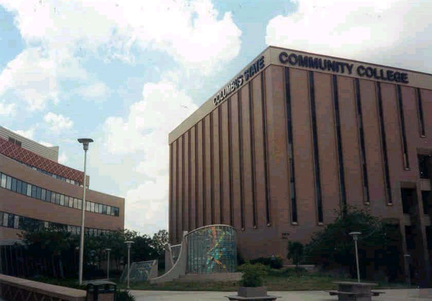
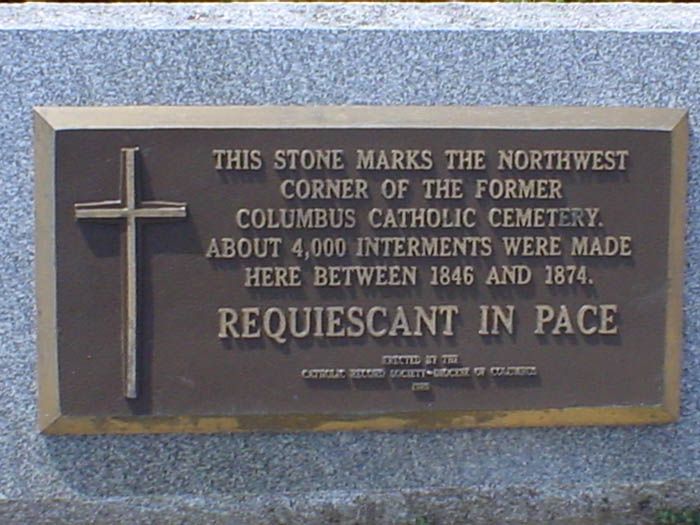

Columbus State Community College

A small school in the northeastern corner of downtown, Columbus State Community College is only about thirty years old. Why is it haunted? It was built on top of an old Catholic cemetery which was used until the mid-1800's. Every time they put up a new building they find more bones, which are then sent to a church for consecration and burial, but apparently that's not enough for the ghosts, who remain so pissed that they harass night workers and local cops. According to a recent article in The Other Paper, some custodians have quit because of the disturbances, and some cops refuse to patrol certain floors alone.

I've known more people than I can count who went to Columbus State, and none of them ever reported anything strange. One friend of mine was in a play in Nestor Auditorium, where a custodian claimed to have heard his name called, and he rehearsed at night. Nothing. But who knows; they say that the disturbances occur more frequently right after they exhume new bodies. Columbus State is located on Cleveland and Grant Avenues north of downtown.
Back
Sources
Smith, Robin. Columbus Ghosts. Worthington, OH: Emuses, Inc., 2002. pp. 60-61.